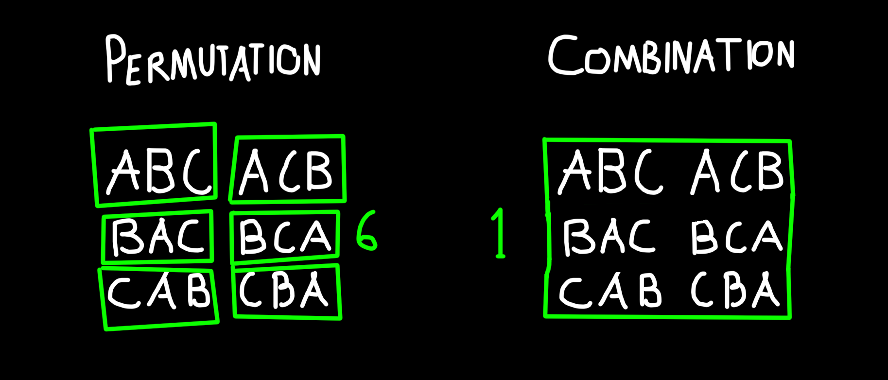

Scroll Down
Permutations involve arranging items in a specific order, while combinations involve selecting items without regard to order. Understanding the difference between permutation and combination is crucial. This distinction helps approach counting problems with clarity and precision.
Permutation refers to the arrangement of items in a specific order. The order of arrangement is crucial.
P(n, r) = n! / (n-r)!
Example: How many different ways can Iron Man, Captain America, Thor, Black Widow, and Hulk be arranged in a line for a photo?
= 5! / (5 - 3)!
= 120 / 2 = 60 ways
Combination refers to the selection of items where the order does not matter.
C(n,r) = n! / [r! x (n-r)!]
Example: The Avengers team needs to send 3 superheroes on a mission. How many ways can they choose 3 superheroes from Iron Man, Captain America, Thor, Black Widow, and Hulk?
= 5! / [3! x (5 - 3)!]
= 120 / [6 x 2]
= 120 / 12 = 10 ways
Knowing the difference between permutations and combinations helps in solving different types of counting problems accurately and efficiently. These methods are vital in combinatorics as these simplify the counting of outcomes that reach very large numbers. This eases the solving process and makes it an efficient method to be used.
Applications:
These concepts are applied in numerous real-life scenarios. For instance, permutations are used for arranging seats at an event, while combinations are used for selecting a committee from a group. By understanding these principles, we can solve counting problems accurately and find practical solutions.